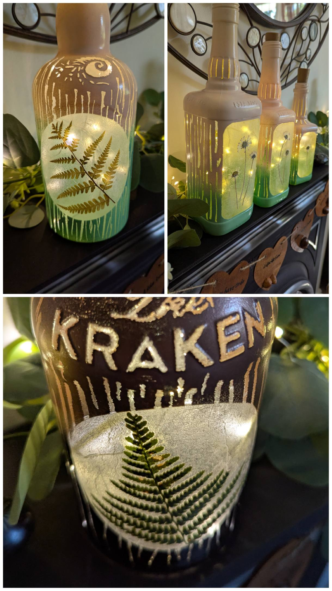
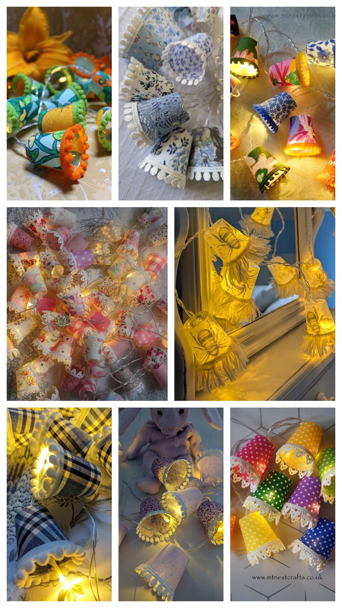
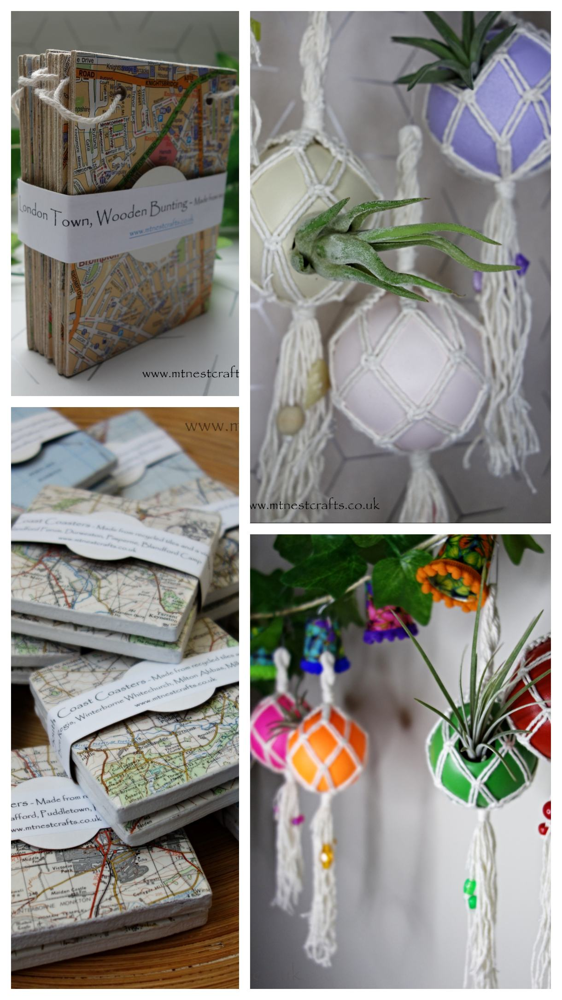

Shop MTNestCrafts
Handmade, recycled creations — available via our Etsy shop.
Our items are made in small batches using repurposed and recycled materials. Because of this, availability changes regularly.
All purchases are handled through our Etsy shop, click on the links below. You can also find my creations in Absolute Artisans, Cranborne Rd, Wimborne, Dorset. BH21 4HW and in Buttons & Bows Gift Shop, The Courtyard Craft Centre, Huntick Rd, Lytchett Minster, Dorset. BH16 6BA
Bottle Lights
Hand painted and decoupaged bottle lights created from unusual bottles saved from landfill. Each piece is unique.
Mini Lampshade Fairy Lights and Craft Kits
Made using recycled festival taster cups, carefully cleaned and repurposed into charming mini lampshade fairy lights.
Guitar Shelves
Up-cycled guitars transformed into functional wall shelves. No two pieces are ever the same.

Avocado Mushroom Air Fresheners and other Random Upcycles
The handcarved avocado stone air fresheners are a quirky new addition to MTNestCrafts. Made using a wood slice from branches trimmed from MTNest HQ and waste fabric on the back. Other random upcycles include - Map coasters, made from old tiles and maps, Art Plaques which are handpainted 'House number seconds' and Bunting made from scrap ply wood and old maps.
Looking for something custom or spotted something you like on social media? Feel free to get in touch.
Contact Me